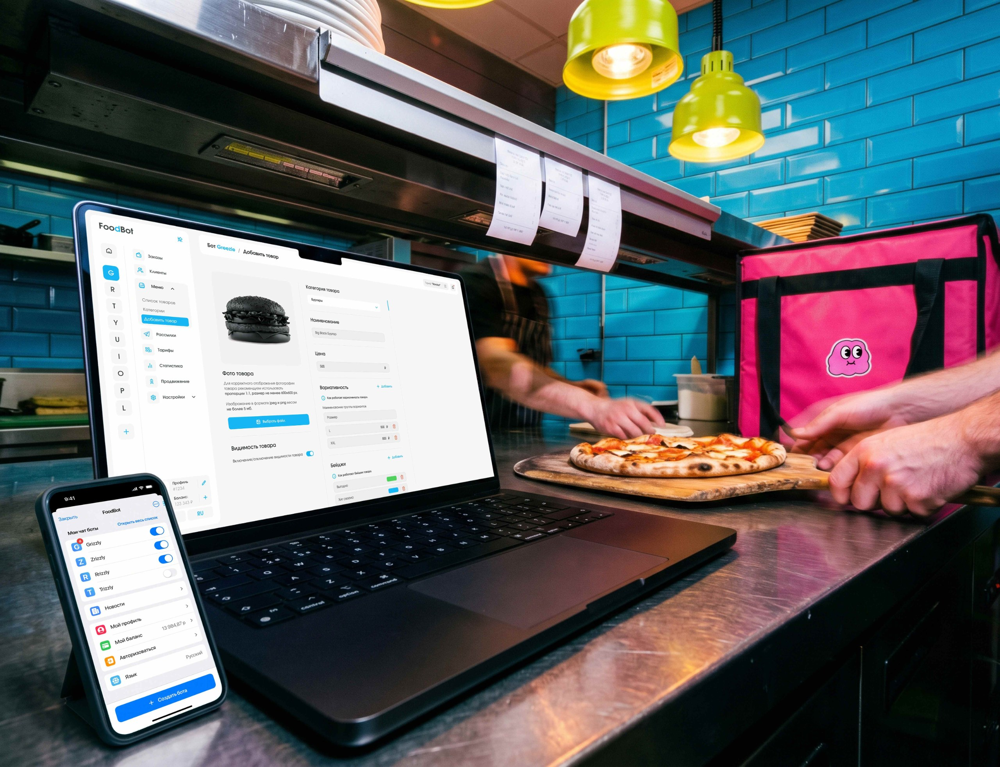

FoodBot
FoodBot is a SaaS platform where you can launch your own Telegram WebApp chatbot for food delivery orders without code.
in this case
-
I moved the admin panel into Telegram, and missed orders dropped by 40%.
The stop list, prices and orders can now be changed from a smartphone, in a familiar messenger. -
I replaced one confusing field with step-by-step instructions.
Five steps in plain language, and onboarding drop-off fell by 25%. -
Why I didn’t compete with rivals on the number of features.
Three hypotheses, ICE scoring and a decision I had to discuss with the client. -
The main blue was hard to read on white.
How a contrast check changed the main interface color.

product design/b2bProject at a glance
Role. I was the only designer on the team and was responsible for all product design.
Timeline. 11 months.
Start. A new project from scratch. Only the site map and competitor metrics are on hand.
What I did. Research, user flows, the admin panel, the Telegram Mini App, a landing page, the design system and handoff to development.
Bottom line. Three platforms in one design system: about 174 screens of the admin panel, more than 150 screens of the widget and landing page, the product works better than the competitors.
Task and constraints
The task was to rework the UX/UI of the admin panel (account dashboard) for food business owners.
Business goals: more owners reaching bot launch, fewer missed orders and fewer support requests.
Main condition: the interface has to be clear to people without technical skills. Setting up a bot should be as easy as filling in a social media profile.
Technical constraint from the client: the mobile admin panel works as a Telegram Mini App, that is, inside Telegram’s built-in browser. It has its own system buttons, the styling adapts to the user’s Telegram theme, and when the keyboard is open there is little vertical space left.
What I found out
Audience. Owners of cafés, burger places, sushi bars and coffee shops are on their feet all day and miss orders because they don’t see notifications. I realized that management has to be on the phone, with notifications.
Competitors. Competitors have flexible settings and many features, but they don’t help people get to the main action, and the first setup drags on. My conclusion: the interface should guide people step by step.
Interface language. Owners are put off by terms like “API token” and multi-level settings. So the technical steps need to be explained in simple words.

Three hypotheses and how I chose
To compare the hypotheses I scored them with ICE. Impact: how strongly the hypothesis would move the key metrics, which are time to bot launch and the share of missed orders. Scored from 1 to 10. Confidence: how sure I am of the effect given the research data, from 0 to 100%. Ease: how much time, resources and team effort it takes, from 1 to 10, where 10 is easiest. The total score is Impact × Confidence × Ease.
Hypothesis A. More features than competitors. We could try to win on capabilities. But new settings would raise the entry barrier that already scares people off.
Impact 3/10 · Confidence 30% · Ease 2/10 → ICE 1.8
Hypothesis B. Training and support. Video instructions and fast support. But the complexity would just move to support, and orders would still be missed.
Impact 4/10 · Confidence 50% · Ease 8/10 → ICE 16
Hypothesis C. An interface that guides people step by step. Step-by-step instructions instead of technical fields, a menu shown as visual cards, hints next to settings and management from the phone in Telegram.
Impact 9/10 · Confidence 80% · Ease 3/10 → ICE 21.6
I chose C because it has the highest ICE score: 21.6 versus 1.8 and 16. It is hard to build, but it lowers the entry barrier, shortens the time to bot launch and moves management to the phone, where the owner spends the whole day anyway. The risk was that the mobile version in Telegram needed a lot of separate work. I discussed it with the client as a business decision.
Where I was wrong and what I changed
A blue that was hard to read on white. In the first version the main blue on a white background didn’t have enough contrast. Captions, links and secondary buttons were hard to read, especially on a phone on the go. I saw this when I checked the mockups for contrast. I adjusted the shade: text and buttons became easy to read, and the brand color stayed recognizable.
Testing without an expensive test. I didn’t want to wait for an A/B test, so I built a tool that creates an attention heatmap for a specific audience. It showed that on the key screens attention follows the scenario I planned. So the decisions went to development already checked.
Decisions and what they target
Connecting a bot in 5 steps (UX). Before, there was one input field that scared people. I replaced it with numbered instructions for working with BotFather, written in plain language, with highlighted commands and links.
What it targets: people don’t get stuck on the first technical step, and onboarding drop-off goes down.

Screens for each stage of using the product (UX). While there are no bots, the center of the screen has one button: create your first bot. Once bots exist, their cards, filters and search come first, and the create button stays within reach.
What it targets: the interface leads a beginner to activation and doesn’t get in the way of an experienced user managing bots.


Contextual hints (UX). Next to non-obvious settings there is a help button. It opens a window with an explanation, sample data and how it will look.
What it targets: people get an answer before they get confused. Setup takes less time, and people write to support less often.

Admin panel in a Telegram Mini App (UX/UI). The stop list, prices, mailings and orders can be changed right from a smartphone. How this solves the Telegram constraint: I built the screens on Telegram’s native UI kit. Navigation is native, colors come from the user’s theme, and forms are short and fit above the keyboard.
What it targets: new orders arrive where the owner already spends the day, and fewer orders are missed.

Defending the design and handoff
I walked the client through the logic step by step: from café owners’ problems to the decisions in the mockups.
Mobile version first. Adapting to the Telegram Mini App needed separate work, but it is what solves missed orders. Fewer settings in sight. I suggested not chasing the number of features and instead making an interface that someone without technical skills can figure out.
I handed the mockups to development in good order: screens, states and modals are built with Auto Layout and linked to the UI kit and design system, and animations have comments. The landing page, admin panel and mini app run on one design system, so new modules are added quickly without breaking the style.
How I work. For eleven months I was the only designer across three platforms. So I linked every decision to a business goal and explained it myself, and when a decision was debatable I said so directly, together with the risk.

Results
Product: how the product works and how people use it
Connecting a bot in 5 steps: onboarding drop-off fell by 25%.
Contextual hints: setup takes 30% less time, and support requests fell by 20%. Most questions are answered right in the interface.
Admin panel in a Telegram Mini App: missed orders fell by 40%, because delivery management is now always on the phone.
Screens for each stage: the interface leads a beginner to their first bot and gives an experienced user quick access to management.
One design system for three platforms: new modules are developed 20% faster.
Communication: how the product explains its value to users
Technical steps explained in simple words: instead of an “API token”, clear steps with highlighted commands.
The interface looks like a familiar builder, not a complex database. Owners can see they will manage on their own.
A menu shown as visual cards: owners see the menu the same way a guest will see it in the bot.
A high-contrast, readable interface: after the blue was fixed, everything reads on a phone on the go.
3 platforms · about 174 admin panel screens (94 + 80 responsive) · more than 150 mini app screens · 4 landing page pages · 12 pages in Figma

How I used AI
Claude: data collection and analysis. Usage scenarios, documentation and reviews of competing platforms. From these I put together problem clusters and saw a common weakness in the market: interfaces don’t lead people to the main action. The main benefit is quality: before, I collected data from a small number of sources, while Claude covers many more, so the conclusions rest on a fuller picture. About 5 minutes instead of a full day of manual searching.
My own heatmap tool. With the help of AI I built a tool that creates an attention heatmap for a specific audience. It lets me check scenarios without an expensive A/B test.
Claude: segmentation and internal metrics analysis. Breaking down platform metrics by user segment and funnel stage. About 2 minutes instead of 2 hours of work in Excel.
Claude + Figma Agent: preparing for development. Styles, layer naming, responsive versions, building the design system and components in all states, finding missing screens and states, checking the user path logic and contrast, comments for developers. About 1 hour including edits instead of 16 hours of manual work.
AI helps me with data collection and routine work. I make the decisions myself and check them myself.